Linux系统启动及常用命令
Linux系统启动过程
RHEL/CentOS启动过程总览
- BIOS初始化
- 检测所有外围设备
- 按配置顺序寻找启动介质
- 从MBR寻找引导程序
- 启动加载器
- GRUB（stage1）
- GRUB（stage1.5）
- GRUB（stage2）
- 内核初始化
- 设备检测
- 设备驱动初始化
- 以只读方式挂载根文件系统
- 加载初始化进程
- 执行init进程（初始化进程）
- rc.sysinit
- rc
- rc.local
- mingetty
BIOS
BIOS即（basic input/output system，基本输入输出系统），是指首次开机时由计算机上运行的软件代码。
BIOS 的主要功能是将识别和控制各种设备的程序代码嵌入在一个芯片上。包含机器的配置信息，如：IDE controller, NIC等。
BIOS允许用户设置介质启动顺序。
BIOS初始化的过程：
- 启动
- CPU跳到BIOS的地址
- BIOS启动POST（Power-On Self Test），检测所有外围设备
- 按配置顺序寻找启动介质
- 读取和执行引导设备首扇（主引导扇区），读取引导介质上的MBR以寻找引导程序（MBR的前446字节，即MBR的引导加载器，也就是GRUB的stage1），找到之后就执行它
MBR
MBR即（master boot recorder)，主引导记录，是一个512字节的硬盘首扇区。
MBR的组成为：
- 引导加载器（446字节）：包含可执行代码和错误信息文本
- 硬盘分区表（64字节）：包含4个分区的记录
- 结束标志（2字节）：用于MBR的验证检查 (0xAA55)
MBR被加载到RAM后，启动过程由其接管。
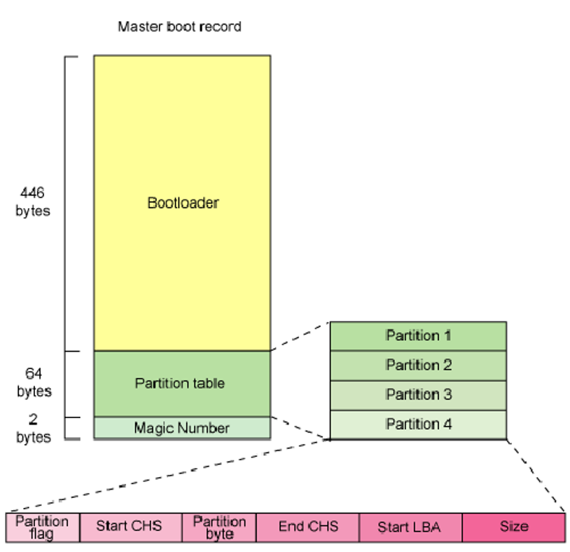
启动加载器
启动加载器即Boot Loader，也称作内核加载器，任务是加载Linux内核，是一种可选的、初始的RAM磁盘。目前流行的LINUX引导加载程序有：
- GRUB或LILO
- Syslinux
GRUB
GRUB即GRand Unified Bootloader，是一种与操作系统无关的启动加载器，位于/boot/grub目录下，需需要自己下载安装，不过一般Linux系统内置。
它提供了交互操作界面和命令行界面，支持文件系统的访问，在启动过程中可读取GRUB的配置文件，支持多种内核的可执行文件格式，支持无盘系统，支持MD5口令保护。
GRUB的启动过程为：
- GRUB stage1：
- 即MBR的前446字节，任务就是加载stage1.5
- GRUB stage1.5：
- 位于主引导扇区上的MBR后的30KB
- 是stage1和stage2的中间层
- 任务是加载文件系统驱动，以识别stage2存放的文件系统，并且加载stage2
- PS：GRUB stage1和stage1.5是系统安装时写入硬盘的，其副本位于/boot/grub目录下。
- GRUB stage2：
- 是GRUB的核心程序，位于/boot/grub/stage2
- 其主要作用为：
- 读取配置文件 /boot/grub/grub.conf
- 显示操作系统启动选择界面
- 将用户选择的内核加载到内存，并将控制权移交给该内核
- GRUB支持两种加载方式：
- 直接加载：加载用户选择的内核
- 链式加载：加载另一个引导程序从而加载其它操作系统
内核初始化
当启动加载器执行完毕，即可装载用户选择的内核，并进行内核初始化。
内核初始化的过程主要为：
- 设备检测：内核向BIOS查询所有的硬件信息，并接管这些设备
- 设备驱动程序初始化：驱动系统中的硬件设备
- 以只读方式加载根文件系统：装载所需的内核模块（在启动内核中不存在）
- 载入初始化进程init
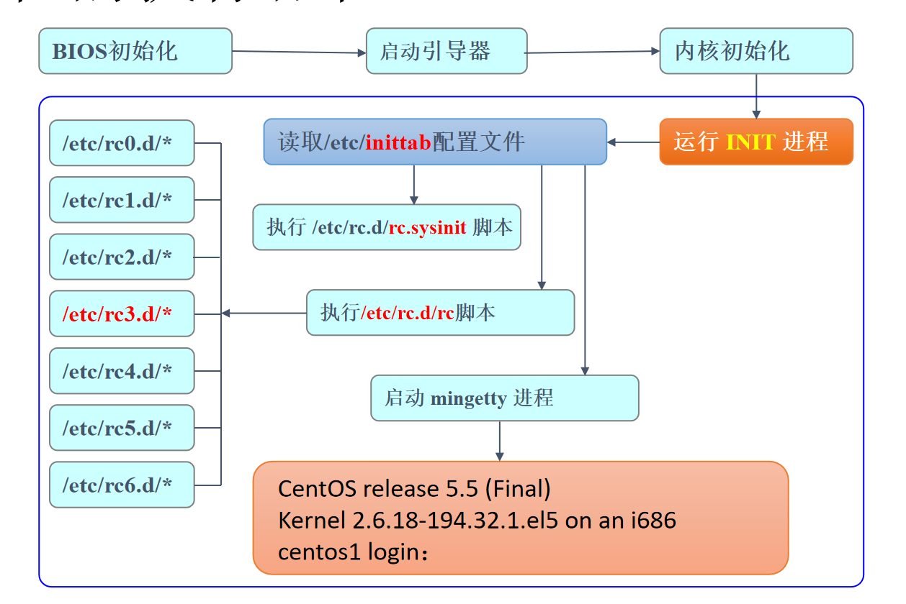
init进程
init进程是Linux内核引导运行的第一个进程，其进程号PID永远为1。
通过配置，可以初始化不同的init进程，详情参考老师的PPT。
Linux的运行级别：
Linux的运行级别即运行Linux系统的不同模式，每种模式对应不同的服务程序组合。
默认的7种运行级别为：
- 0：关机状态
- 1：单用户模式
- 2：字符界面的多用户模式（不支持网络）
- 3：字符界面的完整多用户模式（服务器上一般采用这种）
- 4：未分配使用
- 5：图形界面的多用户模式
- 6：重新启动
修复运行级别
三种用于系统修复的运行级别：
- 运行级别1
- 运行级别S
- 运行级别emergency
进入方法
- init [1/s/-b]
- 在GRUB的菜单中为内核传递参数
系统救援环境
在RHEL/CentOS的安装程序Anaconda中提供了一种援救环境（rescue environment），主要解决在执行init守护进程之前发生的故障，也可以修复运行级别1/S/emergency能解决的故障。进入援救环境之后便可以使用其提供的各种工具对系统进行修复。
Linux常用命令
Linux的字符工作方式
Linux的工作方式有：
- 图形工作方式
- 字符工作方式
使用字符工作方式的原因是：
- 字符工作方式可以高效地完成所有任务，特别是完成系统管理任务
- 系统管理通常远程进行，远程登录后只能进入字符工作方式
- 由于不启动图形工作环境，大大节约了系统资源
进入字符工作方式的方法：
- 图形界面下开启终端
- 系统启动后直接进入字符工作方式
- 远程登录（SSH/Telnet）
系统提供多个（默认6个）虚拟控制台，可以独立使用，互不影响。
登录和注销字符工作方式：
- 登录：输入用户名和密码
- 注销：
- 输入logout
- 使用ctrl+D
- 提示符：
- 超级用户（root）：#
- 普通用户：$
Linux命令格式
进入Linux的字符界面后，即可输入命令执行各种操作。Linux的命令基本格式为：
命令名 [选项] [参数1] [参数2] …
如: cp –i file1.c myfile.c
输入命令时，需要注意：
- Linux对于命令名大小写敏感，都是小写
- 方括号内容都是可选的
- 选项可以有多个，用“-”相连
- 命令行的参数提供命令运行的信息或者命令执行过程中所使用的文件名
- 如果命令行中没有提供参数，则命令使用标准文件进行输入/输出
- 命令在正常执行后返回一个0值，表示执行成功
- Linux操作系统的联机帮助对每个命令的准确语法都做了说明
- 命令与选项和参数之间要用空格或制表符隔开
关机和重新启动
Linux中，关机和重启本质是：切换运行级别。
可以使用的关机命令有：
- init 0（切换Linux运行级别至0，参考上一章的运行级别）
- halt
- shutdown -h +5
重启命令有：
- init 6
- reboot
- shutdown -r +5
shutdown命令的参数含义为：
- －k 只是警告，不实际关机
- －r 关机后重新启动
- －h 关闭系统
常用的简单命令
这些命令一般较为简单，参数也比较少。
who命令
列出所有正在使用系统的用户、所用终端名和注册到系统的时间。
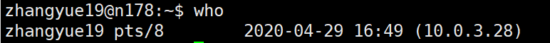
echo命令
将命令行中的参数显示到标准输出（即屏幕）上 。
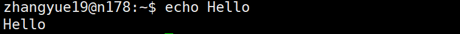
date命令
在屏幕上显示或设置系统的日期和时间。
cal命令
显示公元1～9999年中任意一年或者任意一个月的日历 （默认当前月份）。
clear命令
清屏。
passwd命令
修改用户密码。
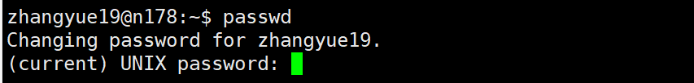
常用的信息显示命令
whoami命令
显示用户自己的身份。
hostname命令
显示主机名称。
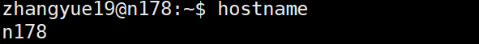
top命令
显示当前系统中耗费资源最多的进程。
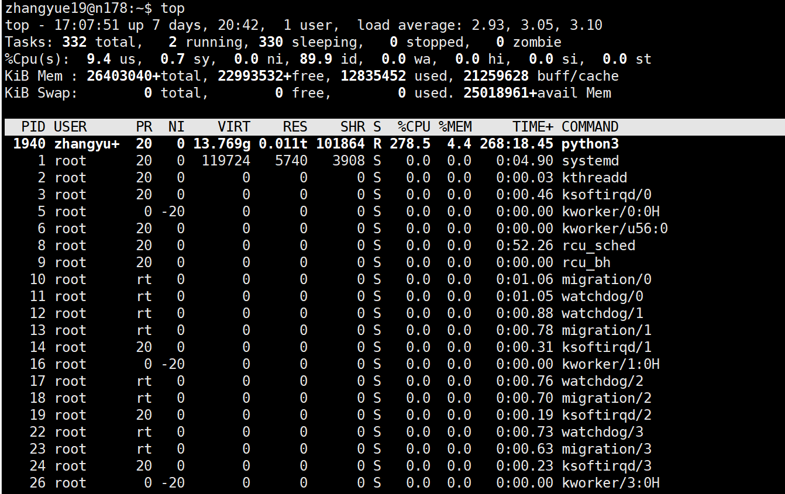
du命令
显示指定文件已使用的磁盘空间的总量。
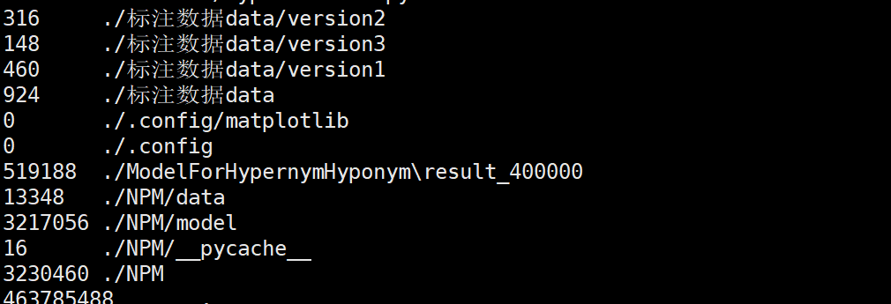
df命令
显示文件系统磁盘空间的使用情况。
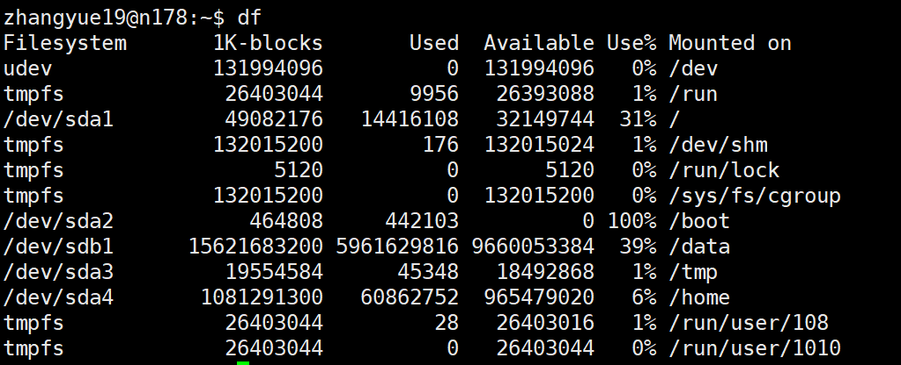
free命令
显示当前内存和交换空间的使用情况。
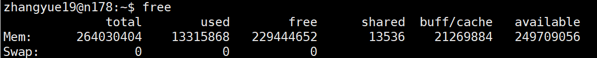
du、df、free命令的区别
- du命令通常搜索文件，对搜索到的文件大小进行累加。它只能计算到可见文件大小之和。
- df命令利用文件系统来获取文件大小。有的文件被删除后，虽然不可见了，但是在文件系统中只是暂时消失。当所有程序都不用时，才会根据OS的规则释放掉已经删除的文件， df记录的是通过文件系统获取到的文件的大小，他比du强的地方就是能够看到已经删除的文件，而且计算大小的时候，把这一部分的空间也加上了，更精确了。
- free命令与du、df不同，他是查看内存和交换空间（虚拟内存）的使用情况的，而du和df查看的是硬盘（disk）使用情况。
id命令
显示当前用户的id信息。
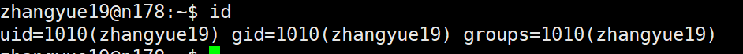
ifconfig命令
显示网络接口信息。
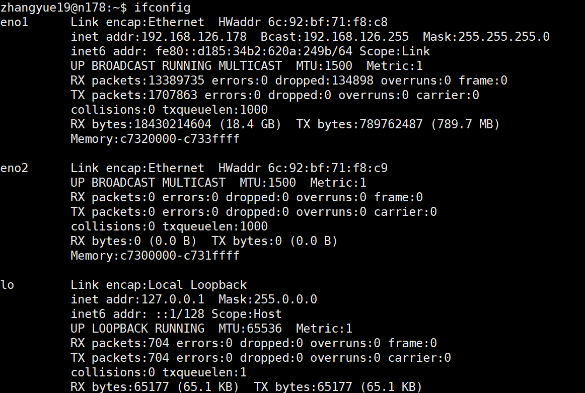
ping命令
测试网络的连通性。
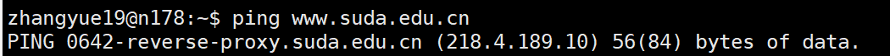
文件命令
文件命名
Linux对于文件命名主要需要注意以下几点：
- 尽量简洁有效
- 不能使用斜线和空字符，允许使用下划线和句点，但不允许使用特殊字符
- 同类文件应该使用相同的后缀
- Linux系统对于大小写敏感
- 如果一个目录或文件名以一个点 . 开始，表示这个目录或文件是一个隐藏目录或文件(如：.bashrc)。即以默认方式查找时，不显示该目录或文件。
文件显示命令
cat命令
cat [选项] 文件
有两项功能：在标准输出上显示文件的内容；连接两个或多个文件，如：cat f1 f2>f3 ，这里是使用了一个重定向符号。
常用选项：
- -b，–number-noblank 从1开始对所有非空输出行进行编号。
- -n，–number 从1开始对所有输出行编号。
- -s，–squeeze-blank 将多个相邻的空行合并成一个空行。
- –help 打印该命令用法，并退出，其返回码表示成功。
more命令
more [选项] 文件
说明：该命令一次显示一屏文本，满屏后停下来，并且在屏幕的底部出现一个提示信息，给出至今已显示的该文件的百分比：–More–（XX%）。（一般很大的文件都是用more显示一页，然后用空格一页一页看的，cat的话会很快占满屏幕）
常用选项：
- -num，这个选项指定一个整数，表示一屏显示多少行。
- -d，在每屏的底部显示以下更友好的提示信息：
- -c或-p，不滚屏，在显示下一屏之前先清屏。
- -s，将文件中连续的空白行压缩成一个空白行显示。
- +/，该选项后的模式（Pattern）指定显示每个文件之前进行搜索的字符串。
- +num，从行号num开始。
less命令
less [选项] 文件
与more命令的区别在于：允许用户从后向前浏览文件。
head命令
head [选项] file
head命令在屏幕上显示指定文件的开头若干行，行数由参数值来确定。显示行数的默认值是10。
常用选项：
- -c，–bytes=[-]N 显示每个文件前面N个字节。如果数字N前面带有“-”，则分别显示每个文件除最后N个字节以外的所有内容。如： head -c 5 log2014.log
- -n，–lines=[-]N 显示指定文件的前面N行，而不是默认的10行。如果数字N前面带有“-”，则分别显示每个文件除最后N行以外的所有内容。如： head -n 5 log2014.log
- -q，-quiet，–silent 不显示给定文件的标题。
- -v，–verbose 始终显示给定文件的标题。
touch命令
touch [选项] 文件名
touch命令将会修改指定文件的时间标签，把已存在文件的时间标签更新为系统当前的时间（默认方式），它们的数据将原封不动地保留下来。如果该文件尚未存在，则建立一个空的新文件。
主要用来创建文件。
常用选项：
- -a 仅改变指定文件的存取时间。
- -c，–no-create 不创建任何文件。
- -m 仅改变指定文件的修改时间。
- -t STAMP 使用STAMP指定的时间标签，而不是系统当前的时间 。
文件匹配、排序、显示指定内容的命令
grep命令
grep [选项] 查找模式 [文件名1，文件名2，…]
grep [选项] [-e 查找模式| -f 文件] [文件名1，文件名2，…]
grep命令一般用于在文件中查找指定模式的词或短语，并在标准输出上显示包括给定字符串模式的所有行。通常与正则表达式搭配使用。
例如：grep “nasa” nasa.txt
常用选项：
- -E 将查找模式解释成扩展的正则表达式。
- -F 将查找模式解释成单纯的字符串。
- -b，–byte-offset 在输出的每一行前面显示包含匹配字符串的行在文件中的位置，用字节偏移量来表示。
- -c，–count 只显示文件中包含匹配字符串的行的总数。
- -f FILE 从文件FILE中获取模式，每行一个。空文件不含模式，因此，不做匹配。
- -i，–ignore-case 匹配比较时不区分字母的大小写。
- -R，-r，–recursive 以递归方式查询目录下的所有子目录中的文件。
- -n 在输出包含匹配模式的行之前，加上该行的行号（文件首行的行号为1）
- -v 只显示不包含匹配字符串的文本行。
- -x 只显示整个行都严格匹配的行。
后面会和awk还有sed一起详细讲解一下。
sort命令
sort [选项] 文件列表
用来对文本文件的各行进行排序，排序比较是依据从输入文件的每一行中提取的一个或多个排序关键字进行的。默认按照字典序进行排序，但也可以根据不同的选项执行不同的排序依据，例如使用-n按照数值进行排序。
常用选项：
- -m，–merge 对已经排好序的文件统一进行合并，但不做排序。
- -c，–check 检查给定的文件是否已排好序，若没有，则显示出错消息，不做 排序。
- -u，–unique 与-c选项一起用，严格地按顺序检查；否则，对排序后的重复行只输出第一行。
- -o，–output=FILE 将排序输出放到该文件名所指定的文件中。如果该文件不存在，则创建一个新文件。（Shell中默认可以将命令行输出使用重定向符>或>>输入到文件里，但sort命令的输出不可以通过重定向符来输出）
- -n 按字符串数值排序，与-g区别为不转为浮点数 。
- -g 按通用数值排序，支持科学计数法 。
- -r 降序排序，默认为升序 。
- -h 使用易读性数字(例如： 2K 1G)
uniq命令
uniq [选项] [输入文件[输出文件]]
读取输入文件，比较相邻的行，去掉重复的行，只留下其中的一行。
常用选项：
- -c，–count 显示输出时，在每行的行首加上该行在文件中出现的次数。
- -d，–repeated 只显示重复行。
- -f, –skip-fields=N 忽略比较前N个字段。
- -s, –skip-chars=N 忽略比较前N个字符。
- -u，–unique 只显示文件中不重复的行。
需要注意的是，uniq命令只对相邻的重复行起作用，所以可以与sort命令搭配使用，先sort，再去重。
比较文件内容的命令
comm命令
comm [-123] file1 file2
用来求两个文件的差集，需要注意的是两个文件必须都是排序好的。
常用选项：
- -1 不显示只在第1个文件里出现过的列。
- -2 不显示只在第2个文件里出现过的列。
- -3 不显示只在第1和第2个文件里出现过的列。
- –help 在线帮助。
- –version 显示版本信息。
diff命令
diff [选项] 文件1 文件2
比较两个文本文件，并找出它们的不同。 diff的输出结果表明需要对一个文件做怎样的操作之后才能与第二个文件相匹配。或者这么理解：与第一个文件相比，第二个文件发生了那些变化。 diff并不会改变文件的内容，但是diff可以输出一个ed脚本来应用这些改变。
//file1.txt
I need to buy apples.
I need to run the laundry.
I need to wash the dog.
I need to get the car detailed.//file2.txt
I need to buy apples.
I need to do the laundry.
I need to wash the car.
I need to get the dog detailed.我们使用diff比较他们的不同：
diff file1.txt file2.txt输出如下结果：
2,4c2,4
< I need to run the laundry.
< I need to wash the dog.
< I need to get the car detailed.
-–
> I need to do the laundry.
> I need to wash the car.
> I need to get the dog detailed
//file2.txt
I need to buy apples.
I need to do the laundry.
I need to wash the car.
I need to get the dog detailed.
2,4c2,4 的含义是：第一个文件中的第[2,4]行(注意这是一个闭合区间，包括第2行和第4行)需要做出修改才能与第二个文件中的[2,4]行相匹配。
常用选项：
- -b 忽略空格造成的差别。
- -c 输出格式是带上下文的三行格式。
- -C n 输出格式是有上下文的n行格式。
- -e 输出一个合法的ed脚本。
- -i 忽略字母大小写的区别。
- -r 当文件1 和文件2都是目录时，递归比较找到的各子目录。
复制、删除和移动文件的命令
cp命令
cp [选项] 源文件或目录 目标文件或目录
将源文件或目录复制到目标文件或目录中。
常用选项：
- -a 递归地将源目录下的所有子目录及其文件都复制到目标目录中，并且保留文件链接和文件属性不变。它等效于-dpR。
- -d 复制时保留文件链接。
- -f，–force 如果现存的目标文件不能打开，则删除它并且重试一次。也就是直接覆盖。
- -i，–interactive 与-f选项不同，在覆盖目标文件之前先给出提示，要求用户予以确认。回答y，将覆盖目标文件。这是交互式复制。
- -p 除复制源文件的内容外，还将其修改时间和存取权限也复制到新文件中。
- -R，-r 递归复制目录，即将源目录下的所有文件及其各级子目录都复制到目标位置。
- -l 不复制，而是创建指向源文件的链接文件，链接文件名由目标文件给出。
通常上述所说的文件链接都是指软链接，也就是符号链接（操作系统Blog里会讲一下）。
如果需要复制目录，必须使用-r，也就是递归复制，其他的文件操作命令也是同样的道理，除非是专门的目录操作命令。
一般来说，交互式操作更安全一些，防止误操作。
rm命令
rm [选项] 文件列表
删除文件和目录 。目录需要使用-r选项。
常用选项：
- -d 删除目录，不管它是否为空（仅超级用户才可使用）。
- -f，–force 忽略不存在的文件，并且不给出提示信息。
- -r，-R，–recursive 递归地删除指定目录及其下属的各级子目录和相应的文件。
- -i 交互式地删除文件。
mv命令
mv [选项] source target
对文件或目录重新命名，或者将文件从一个目录移到另一个目录中 。同样，目录需要递归操作。
常用选项：
- -i，–interactive 交互式操作。如果源文件与目标文件或目标目录中的文件同名，则询问用户是否覆盖目标文件。用户输入“y”，表示将覆盖目标文件；输入“n”，表示取消对源文件的移动。这样可以避免误将文件覆盖。
- -f 与“-i”相反，它禁止交互式操作。在覆盖已有的目标文件时，不给任何提示。
wc命令
wc [选项] [文件]…
统计指定文件的字节数、字数、行数，并将统计结果显示出来 .
常用选项：
- -c，–bytes 统计字节数。
- -l，–lines 统计行数。
- -w，–words 统计字数。
目录命令
Linux目录结构
在 Linux 或 Unix 操作系统中，所有的文件和目录都被组织成以一个根节点开始的倒置的树状结构。
文件系统的最顶层是由根目录开始的，系统使用 / 来表示根目录。在根目录之下的既可以是目录，也可以是文件，而每一个目录中又可以包含子目录文件。如此反复就可以构成一个庞大的文件系统。
在Linux文件系统中有两个特殊的目录，一个用户所在的工作目录，也叫当前目录，可以使用一个点 . 来表示；另一个是当前目录的上一级目录，也叫父目录，可以使用两个点 .. 来表示。
用户可以通过相对路径和绝对路径访问文件或者目录，绝对路径默认从根目录/开始，相对路径默认从当前目录开始，开头可以加./也可以不加。
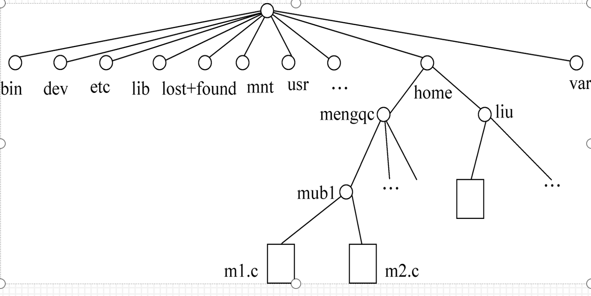
系统启动必须：
/boot：存放的启动Linux 时使用的内核文件，包括连接文件以及镜像文件。
/etc：存放所有的系统需要的配置文件和子目录列表，更改目录下的文件可能会导致系统不能启动。
/lib：存放基本代码库（比如c++库），其作用类似于Windows里的DLL文件。几乎所有的应用程序都需要用到这些共享库。
/sys： 这是linux2.6内核的一个很大的变化。该目录下安装了2.6内核中新出现的一个文件系统 sysfs 。sysfs文件系统集成了下面3种文件系统的信息：针对进程信息的proc文件系统、针对设备的devfs文件系统以及针对伪终端的devpts文件系统。该文件系统是内核设备树的一个直观反映。当一个内核对象被创建的时候，对应的文件和目录也在内核对象子系统中
指令集合：
/bin：存放着最常用的程序和指令
/sbin：只有系统管理员能使用的程序和指令。
外部文件管理：
/dev ：Device(设备)的缩写, 存放的是Linux的外部设备。注意：在Linux中访问设备和访问文件的方式是相同的。
/media：类windows的其他设备，例如U盘、光驱等等，识别后linux会把设备放到这个目录下。
/mnt：临时挂载别的文件系统的，我们可以将光驱挂载在/mnt/上，然后进入该目录就可以查看光驱里的内容了。
临时文件：
/run：是一个临时文件系统，存储系统启动以来的信息。当系统重启时，这个目录下的文件应该被删掉或清除。如果你的系统上有 /var/run 目录，应该让它指向 run。
/lost+found：一般情况下为空的，系统非法关机后，这里就存放一些文件。
/tmp：这个目录是用来存放一些临时文件的。
账户：
/root：系统管理员的用户主目录。
/home：用户的主目录，以用户的账号命名的。类似于windows下的users目录。
/usr：用户的很多应用程序和文件都放在这个目录下，类似于windows下的program files目录。
/usr/bin：系统用户使用的应用程序与指令。
/usr/sbin：超级用户使用的比较高级的管理程序和系统守护程序。
/usr/src：内核源代码默认的放置目录。
运行过程中要用：
/var：存放经常修改的数据，比如程序运行的日志文件（/var/log 目录下）。
/proc：管理内存空间！虚拟的目录，是系统内存的映射，我们可以直接访问这个目录来，获取系统信息。这个目录的内容不在硬盘上而是在内存里，我们也可以直接修改里面的某些文件来做修改。
扩展用的：
/opt：默认是空的，我们安装额外软件可以放在这个里面。
/srv：存放服务启动后需要提取的数据（不用服务器就是空）
创建和删除目录的命令
mkdir命令
mkdir [选项] dirname
命令创建由dirname命名的目录。
常用选项：
- -m，–mode=MODE 对新建目录的存取权限设置为MODE，存取权限用给定的八进制数字表示，与chmod类似。
- -p，–parents 可一次建立多个目录，即如果为新建目录所指定的路径中有些父目录尚不存在，此选项可以自动建立它们。
rmdir命令
rmdir [选项] dirname
该命令从一个目录中删除一个或多个子目录 ，需要注意的是，该命令删除的目录必须为空，否则无法删除！此时可以使用rm -r 递归删除文件。
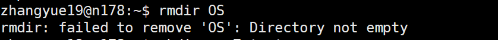
常用选项：
- -p，–parents 递归删除目录dirname，当子目录删除后其父目录为空时，也一同被删除。如果有非空的目录，则该目录保留下来。
改变工作目录和显示目录内容的命令
cd命令
cd [dirname]
改变当前工作目录，特别常用。没有选项。
例如：
- cd ~ 切换到用户的私有目录
- cd /bin 切换进入/bin目录
- cd .. 返回当前目录的上一级目录
pwd命令
没有参数，返回当前目录。
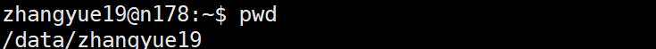
ls命令
ls [选项] [目录或文件]
如果给出的参数是目录，该命令将列出其中所有子目录与文件的信息；如果给出的参数是文件，将列出有关该文件属性的一些信息。默认给出的参数是当前目录。
常用选项：
- -a 显示所有文件及目录 (ls内定将文件名或目录名称开头为”.”的视为隐藏档，不会列出)
- -l 除文件名称外，亦将文件型态、权限、拥有者、文件大小等资讯详细列出
- 依次为：文件类型与权限 链接数 文件主 文件组 文件大小 建立或最近修改的时间 文件名
- -r 将文件以相反次序显示(原定依英文字母次序)
- -t 将文件依建立时间之先后次序列出
- -A 同 -a ，但不列出 “.” (目前目录) 及 “..” (父目录)
- -F 在列出的文件名称后加一符号；例如可执行档则加 “*”, 目录则加 “/“
- -R 若目录下有文件，则以下之文件亦皆依序列出（递归显示）
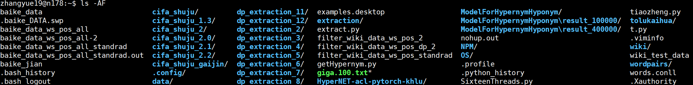
链接文件的命令
Linux文件系统中，有所谓的链接(link)，我们可以将其视为档案的别名，而链接又可分为两种 : 硬链接(hard link)与软链接(symbolic link)，硬链接的意思是一个档案可以有多个名称，而软链接的方式则是产生一个特殊的档案，该档案的内容是指向另一个档案的位置。硬链接是存在同一个文件系统中，而软链接却可以跨越不同的文件系统。
不论是硬链接或软链接都不会将原本的档案复制一份，只会占用非常少量的磁碟空间。
硬链接
在另外的目录或本目录中增加目标文件的一个目录项，直接指向目标文件，有些类似于高级语言中的“引用”的概念。实际上，硬链接并没有创建新的文件，所产生的文件与源文件拥有相同的iNode号。
特点：
- 硬链接，以文件副本的形式存在。但不占用实际空间。
- 不允许给目录创建硬链接。
- 硬链接只有在同一个文件系统中才能创建。
- 不能给不存在的文件名创建硬链接。
软链接
软链接也叫作符号链接，也就是Windows中的快捷方式。创建软链接本质上就是新建了一个文本文件，其中存储了目标文件的路径信息，当打开该文本文件时，将指引系统找到目标文件并执行。
特点：
- 符号链接确实是一个新文件，它有不同的I节点号；而硬链接并没有建立新文件。
- 符号链接没有硬链接的限制，可以对目录文件做符号链接，也可以在不同文件系统之间做符号链接。
- 符号链接也可以给不存在的文件名创建。
ln命令
ln [选项] 源文件 [目标文件]
主要作用就是用来创建链接。
常用选项：
-b 删除，覆盖以前建立的链接
-d 允许超级用户制作目录的硬链接
-f 强制执行
-i 交互模式，文件存在则提示用户是否覆盖
-n 把符号链接视为一般目录
-s 软链接(符号链接)
-v 显示详细的处理过程
文件目录查找命令
find命令
find path -option [ -print ] [ -exec -ok command ] {} \;
Linux find命令用来在指定目录下查找文件。任何位于参数之前的字符串都将被视为欲查找的目录名。如果使用该命令时，不设置任何参数，则find命令将在当前目录下查找子目录与文件。并且将查找到的子目录和文件全部进行显示。
通常最常用的参数就是-name，用来查找文件名称符合 name 的文件。iname 会忽略大小写。如：
find . -name ‘my*’，当前目录下查找以my开头的文件。
whereis命令
Linux whereis命令用于查找文件。
该指令会在特定目录中查找符合条件的文件。这些文件应属于原始代码、二进制文件，或是帮助文件。
该指令只能用于查找二进制文件、源代码文件和man手册页，一般文件的定位需使用locate命令。
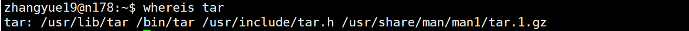
权限命令
用户和权限
Linux系统中规定了4种不同类型的用户：
- u：文件主（owner）；
- g：同组用户（group）；
- o：可以访问系统的其他用户（others）；
- 超级用户（root），具有管理系统的特权。
规定了三种主要的权限：
- 读（r）
- 写（w）
- 可执行或查找（x）
改变文件或目录存取权限命令
chmod命令
chmod key 文件名
chmod命令负责为文件设置权限。key字符串主要为[who] [操作符号] [mode]，用来为指定的用户组设置制定的权限。
用户组可以是以下四个：
- u 表示该文件的拥有者
- g 表示与该文件的拥有者属于同一个群体(group)者
- o 表示其他以外的人
- a 表示这三者皆是
操作符主要有：
- + 表示增加权限
- - 表示取消权限
- = 表示唯一设定权限
权限主要有：
r 表示可读取
w 表示可写入
x 表示可执行
X 表示只有当该文件是个子目录或者该文件已经被设定过为可执行
例如，以下的命令为： 将文件 file1.txt 设为所有人皆可读取 。
chmod a+r file1.txt
默认情况下，是为所有人设置权限，例如我们在运行shell脚本前，通常需要为.sh文件设置可执行权限：
chmod +x test.sh
这样操作比较复杂，我们也可以使用绝对方式来添加权限。
chmod mode 文件名
mode是以3位八进制数字出现的，第一位表示文件主（user）权限，第二位表示组用户（group）权限，第三位表示其他用户（others）权限。
每一位八进制数又是由3位二进制数组成，r=4（100），w=2（010），x=1（001）。
umask命令
umask mode
用来设置系统默认的新建文件权限掩码。 比如我要把umask值改为027，则使用命令 umask 027 即可。
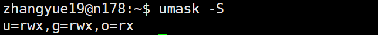
改变用户组和文件主的命令
chgrp命令
chgrp [选项] 组名 文件名
该命令用来改变指定文件所属的用户组，也就是group。
常用选项：
- -R，–recursive 递归式地改变指定目录及其下面的所有子目录和文件的用户组。
chown命令
chown [选项] 用户或组 文件名
改变某个文件或目录的所有者和所属的组 ，也就是owner。
进程管理命令
ps命令
ps [选项]
ps命令是查看进程状态的最常用的命令，它可以提供关于进程的许多信息。
常用选项：
-a 显示系统中与tty相关的（除会话组长之外）所有进程的信息。
a BSD风格。显示系统中与终端tty相关的所有进程的信息；当与选项x一起使用时，显示所有进程的信息。
-e 显示所有进程的信息。
-f 显示进程的所有信息。
-l 以长格式显示进程信息。
r 只显示正在运行的进程。
u 显示面向用户的格式（包括用户名、CPU及内存使用情况等信息）。
x BSD风格。显示所有非控制终端上的进程信息 ；当与选项a一起使用时，显示所有进程的信息。
我经常使用的一个命令：ps -aux | grep xxx.py ，使用管道符，将ps命令的输出传入grep命令，用来查看服务器上后台运行的某个脚本的进程。因为在服务器上跑代码经常要用nohup放在服务器的后台。但那样在重新登录后无法在当前控制台的后台查看PID，所以要使用grep命令在所有进程中进行查找。
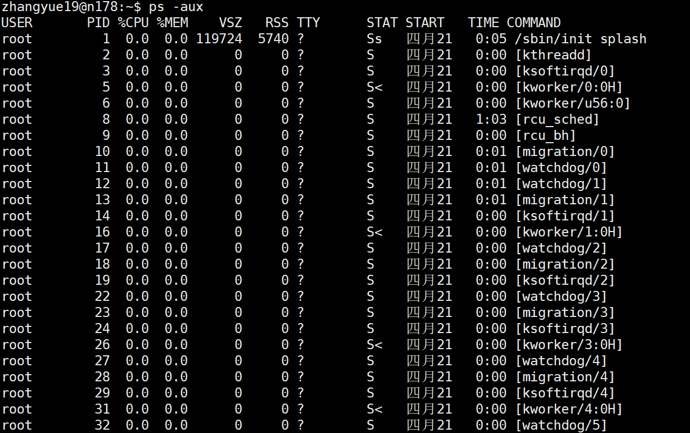
kill命令
kill [-s 信号|-p ] [-a] 进程号…
kill -l [信号]
Linux kill命令用于删除执行中的程序或工作。
kill可将指定的信息送至程序。预设的信息为SIGTERM(15)，可将指定程序终止。若仍无法终止该程序，可使用SIGKILL(9)信息尝试强制删除程序。程序或工作的编号可利用ps指令或jobs指令查看。
强制终止进程：
- kill -9 xxx
sleep命令
sleep 时间值
“时间值”参数以秒为单位，即让进程暂停由时间值所指定的秒数。
&符号
cmd &
符号&可以让指定的命令cmd在后台运行。因为前台一次只能运行一个进程。后台进程的输出可以用重定向符号>或者>>指定。
进程有关的快捷键
- <Ctrl+D> 正常终止正在前台运行的一个进程
- <Ctrl+C> 强行终止正在前台运行的一个进程
- <Ctrl+Z> 挂起一个正在前台运行的进程
jobs命令
显示后台作业和被挂起的进程。
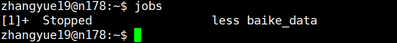
bg命令
bg 进程ID
bg命令在后台恢复运行一个被挂起的进程，这里一般使用jobs命令显示的进程ID。
fg命令
fg 进程ID
fg命令在前台恢复运行一个被挂起的进程，这里一般使用jobs命令显示的进程ID。
进程控制举例
假设当前以root用户登录字符界面，Shell为bash。首先，请显示当前运行的进程。接下来，创建一个后台睡眠进程，让它睡眠1000秒，并在它运行结束前将它挂起。然后，再使用cat命令创建一个进程，使它接受从终端输入的字符并保存至文件example中。输入“This is a example”后， 挂起该进程。现在，请显示被挂起的进程，并将名为cat的进程调度到前台并完成输入，将名为sleep的进程杀死。
ps
sleep 1000s
按下Ctrl+Z，挂起sleep进程
cat > example
在终端输入“This is a example”,然后按下 Ctrl+Z, 挂起cat进程
jobs
fg cat
按下Ctrl+D，正常结束cat命令
运行ps，得到sleep进程的pid，假设为8172
kill -9 8172文件压缩和解压缩命令
这里就不详讲了，和操作系统底层关系不大，用到的时候用man看就好了，纯熟练。
- tar 文件,目录打/解包
- gzip 压缩或解压文件目录,后缀为gz
- compress 压缩或解压文件目录,后缀为Z
- bzip2 压缩或解压文件目录,后缀为bz2
- zcat 显示压缩的文本文件的内容
tar -zcvf myusr.tar.gz mydoc 将mydoc目录打包后压缩,调用gzip压缩工具
tar -zxvf myusr.tar.gz 解压
tar -Zcvf myusr.tar.Z mydoc 将mydoc目录打包后压缩,调用compress压缩工具
tar -Zxvf myusr.tar.Z
tar -jcvf myusr.tar.bz2 mydoc
tar -jxvf myusr.tar.bz2
文件系统挂载和解挂命令
会专门分一章文件系统的博客来详讲。
命令使用技巧
自动补全命令行tab
通常在bash下不必要把命令输入完全,bash能够判断出用户要输入的命令
方法: 输入部分命令,然后按下Tab键
如果用户给出的信息并不唯一,bash将发出一声蜂鸣提醒用户
如再按一次Tab键,bash将符合条件的目录或文件显示出来
命令历史history
bash可以记录一定数目的以前在Shell中输入的命令(历史命令)
有关历史命令的环境变量:
- 记录历史命令的数目:HISTSIZE
- 记录历史命令的文本文件:HISTFILE
- 默认的记录文件:.bash_history,隐含文件,位于用户自己的目录中
使用历史命令的方法:
- 上下键,PgUp,PaDn
- 用键盘上的编辑功能键对显示在命令行上的命令进行编辑
- 用history命令来显示和编辑历史命令
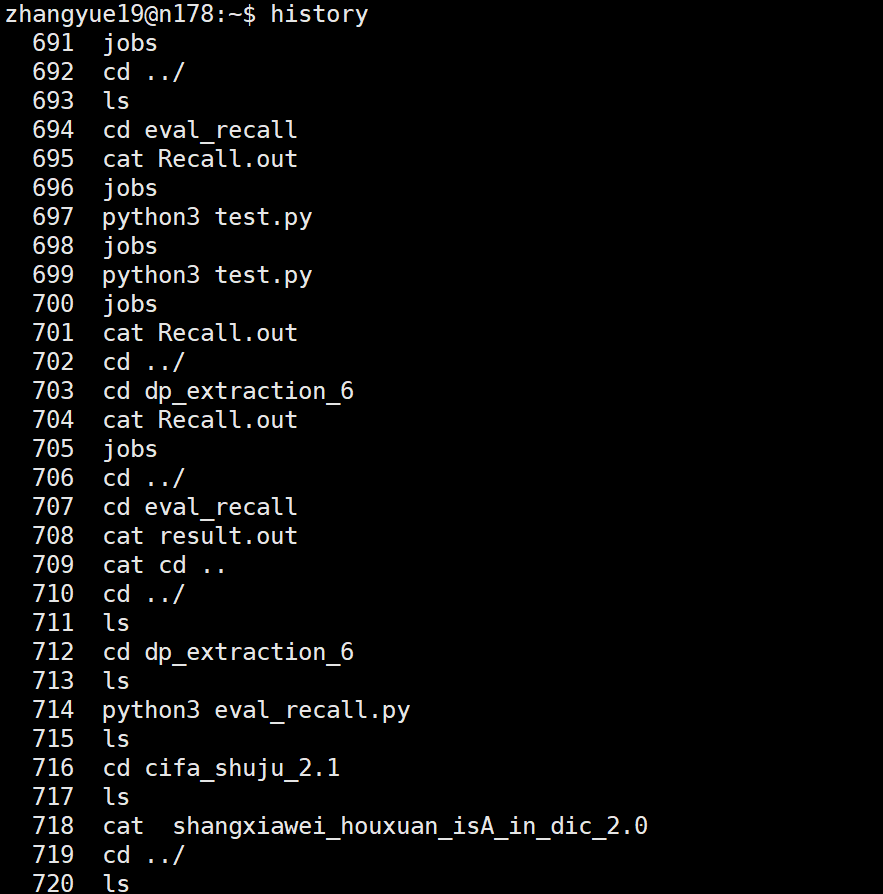
- !的使用(!his)
命令别名alias
alias命令可以给命令另外取一个名字，如：
alias cp=’cp -i’
在定义别名时,等号两边不允许有空格存在,否则bash不能确定用户的意图.若命令中包含空格或其他特殊字符串则必须使用引号。
如果用户需要别名的定义在每次登录时均有效,可将其写入用户私有目录下的.bashrc文件中。
如果别名与系统命令同名,则别名优先于系统命令,如想使用原系统命令,则在命令前添加 \ 字符。
重定向
Linux标准的输入/输出设备端口:
- stdin 标准输入设备端口
- stdout 标准输出设备端口
- stderr 标准错位设备端口
默认的标准输出端口和标准错位端口为控制台的屏幕，默认的标准输入端口是控制台的键盘。
使用重定向符号，可以修改系统默认的输入、输出和错位端口。
< 输入重定向
<<!…! 输入重定向特例, 即here文件
/>或>> 输出重定向，其中，>为不追加写，>>为追加写
2> 错误重定向
&> 同时实现输出重定向和错误重定向

重定向符通常用于将命令结果输出至文件中，或者从文件中读取命令的输入。
ls -l /tmp >dir 将ls命令输出的结果存到当前目录中的dir文件中
ls -l /etc >>dir 将ls命令输出的结果追加到dir文件中
rpm -ql apache >apache.list 获得apache软件包的安装文件清单并存到指定文件中
echo “Hello world!”>message 用echo命令和输出重定向建立简单的文本文件
myprogram 2>err_file 将命令myprogram的错误信息保存到文件中
myprogram &>output_file 将命令myprogram的错误信息和输出信息都保存到文件中wc <<!
/>This text forms the content of heredocument
/>which continues until the end of delimiter
/>! 将命令随后输入的文本作为wc命令的输入cat <<! >mytext
/>This text forms the content of heredocument
/>which continues until the end of delimiter
/>!
利用cat命令,here文档和输出重定向建立简单的文本文件
管道
命令1|命令2|……|命令n
Shell提供管道命令”|”, 将一些命令前后 衔接在一起,形成一个管道线。每个命令的输出作为下一条命令的输入,管道线中的命令总是从左到右顺序执行的,管道线是单向的。
管道与重定向的区别：
- 重定向是修改程序或命令的输入、输出、错位端口
- 管道是直接将一个程序或命令的标准输出作为另一个程序或命令的标准输入,不需要经过任何中间文件
联机帮助命令
man 命令/info 命令
man/info [选项] 命令名
格式化并显示某一命令的联机帮助手册页 ，非常有用。
man命令主要是显示选项。
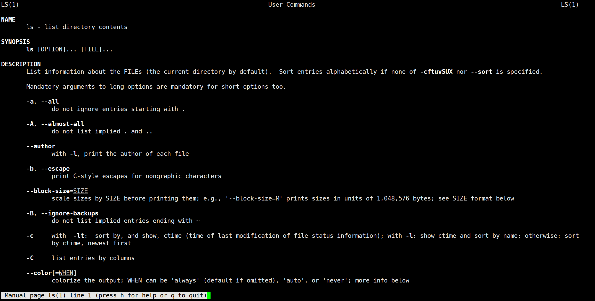
info命令讲解的很详细。
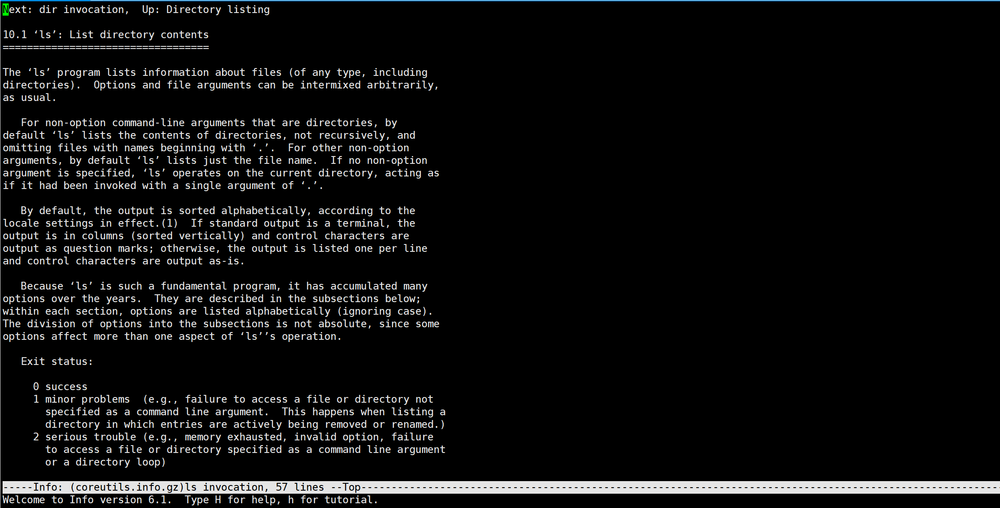
help命令
help 命令
有些命令构造在shell内部，从而在shell环境内部执行。这种命令称为shell内置命令（也称为内部命令）。用来查看所有shell内置命令的帮助信息。
总结
以上就是主要的常用命令，更多命令可以参考菜鸟教程： https://www.runoob.com/linux/linux-command-manual.html